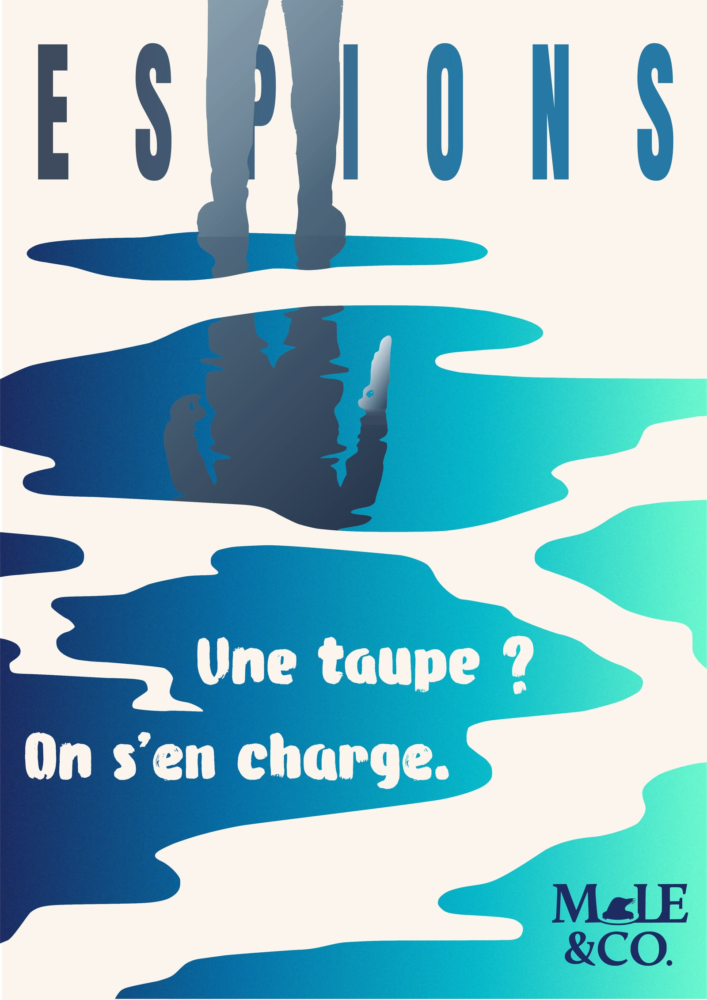
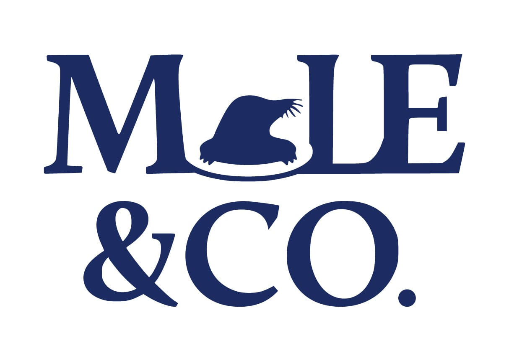
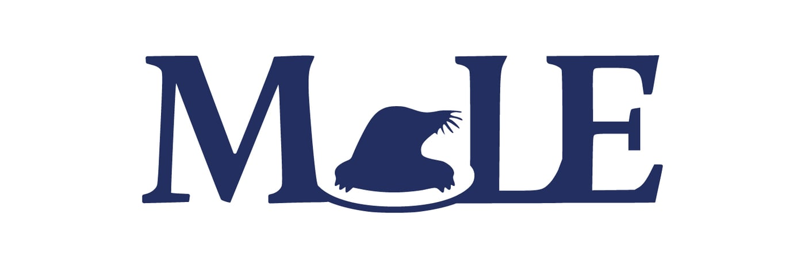

Mole & Co. — Logo & identité visuelle

Le projet
L’identité d’une agence fictive d’espions, conçue en groupe pour la SAE 202. J’ai pris en charge le logo, l’identité visuelle et l’affiche. La taupe remplace le O de MOLE et sert de point de départ à l’ensemble.
Les étapes
Benchmark & recherches sémantiques → Roughs papier → Moodboards → Construction du logo → Affiche A3
Réalisations


